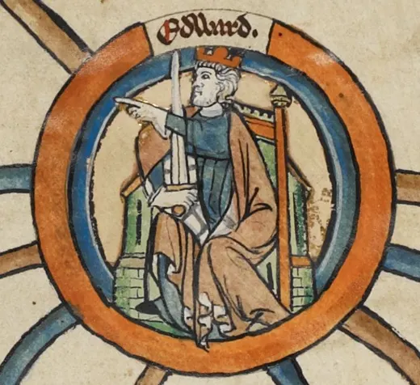

Edward the Elder
Alfred's son, and his formidable sister, push the English frontier north, fort by fort.
England · Reigned 899–924 · Stop 2 of the odyssey
← Learning from the Past: An English Odyssey · ← Alfred the Great · Æthelstan →

- Can you name someone whose achievements are overshadowed by a famous parent?
- Brothers and sisters: are they natural rivals or natural partners?
- Why do some people in history become famous while others are forgotten?
The words for today's story
Each new word is hidden in a sentence. Read it aloud and say what you think the bold word means from the rest of the sentence — then reveal it and see how close you were.
Now use them — out loud
- Using any four of these words, predict: what kind of reign do you think this will be — and how might it end?
- Which words belong to power and which to danger? Sort them out loud and say why.


The story, in three parts
Read each part. After it, there's a quick comprehension check (try the questions from memory first), then one thing to discuss.
Part 1 — A challenged inheritance
When Alfred the Great died in 899, his son Edward became king. It was not a smooth start. His cousin Æthelwold, a son of Alfred's older brother, believed that he had a better right to the crown. He seized a royal estate at Wimborne and later fled to the Danes of Northumbria, who accepted him as a leader.
For several years Æthelwold, who now had Danish allies, raided English land. In 902 there was a battle — usually called the Battle of the Holme — and Æthelwold was killed. Although the Danes held the field, Edward's greatest internal threat was gone.
1. Who was Æthelwold, and why did he revolt?
2. How did the threat from Æthelwold end?
1. Edward's cousin, son of Alfred's elder brother; he believed he had a stronger claim to the throne.
2. He was killed in battle in 902 (the Battle of the Holme).
- In many families, inheritance causes conflict. Why do you think succession was so dangerous for medieval kingdoms?
Part 2 — The Lady of the Mercians
Edward's elder sister Æthelflæd had married Æthelred, the ruler of English Mercia. After her husband died in 911, she ruled Mercia herself, and the chronicles called her "Lady of the Mercians". She was one of the most capable rulers of her age.
Brother and sister worked as a team. Edward fortified towns in the south and east; Æthelflæd built burhs along the Mercian border, at places including Tamworth, Stafford and Warwick. In 917 her forces took Derby, one of the main Danish strongholds, and in 918 Leicester submitted to her without a fight.
1. What title did Æthelflæd hold, and when did she rule alone?
2. Which important Danish town did her forces capture in 917?
1. "Lady of the Mercians"; she ruled Mercia alone after her husband Æthelred died in 911.
2. Derby.
- Æthelflæd is far less famous than her brother. Why do you think women rulers like her are often missing from the story?
Part 3 — The frontier moves north
Through the 910s, Edward and Æthelflæd's campaign pushed the frontier steadily into the Danelaw. Army after army of Danes submitted, and East Anglia and the southern Danelaw came under English rule. When Æthelflæd died in 918, Edward took direct control of Mercia, removing her daughter Ælfwynn from power.
By the time he died in 924, Edward ruled all of England south of the River Humber. He is often overshadowed by his father Alfred and his son Æthelstan — but without his steady, fort-by-fort conquest, their achievements would have been impossible.
1. What did Edward do when Æthelflæd died?
2. How much of England did Edward rule by 924?
1. He took direct control of Mercia and removed her daughter Ælfwynn.
2. Everything south of the River Humber.
- Is a steady, unglamorous achiever worth as much as a famous hero?
Grammar — Relative Clauses
To pack a lot of information into one sentence — who someone was, where something happened — we use relative clauses.
• who for people, which for things, where for places, whose for possession.
• Non-defining clauses add extra information with commas: "Edward, who was deeply religious, rebuilt Westminster Abbey."
• Defining clauses identify which one — no commas.
1. Choose who, which, where or whose
Complete each sentence about Edward the Elder. Use the word in brackets.
1. Edward was the son of Alfred, had defeated the Danes at Edington.
2. Tamworth was one of the towns Æthelflæd built a burh.
3. Æthelwold, claim to the throne was strong, joined the Danes.
1. who
2. where
3. whose
2. Join the sentences
1. Æthelflæd ruled Mercia. She was Edward's sister. (who)
2. Derby was a Danish stronghold. It fell in 917. (which)
3. The chronicle hardly mentions her. It was written in Wessex. (which)
1. Æthelflæd, who was Edward's sister, ruled Mercia.
2. Derby, which was a Danish stronghold, fell in 917.
3. The chronicle, which was written in Wessex, hardly mentions her.
Hold on to this — you'll need it in the Speak tab.
Going deeper
Edward's reign shows how history is shaped by who writes it. The main version of the Anglo-Saxon Chronicle, kept in Wessex, says little about Æthelflæd; a separate Mercian record — sometimes called the "Mercian Register" — tells of her forts and victories. Historians now see the conquest of the southern Danelaw as a partnership of two rulers.
- Why might the Wessex chronicle have played down Æthelflæd's role?
- Edward removed his own niece from power in Mercia. Was that necessary politics or a betrayal?
- Which is harder: starting something great or continuing it?

Stop 2 on the journey → hen. In the Major System Palace, 2 is spelled with the sounds n, which make hen (a plump brown hen).
Picture Æthelflæd's fortress walls with a plump brown hen sitting proudly on top, guarding the eggs of the new kingdom — stop 2.
You don't need the system to follow the story — it's simply a hook that lets you walk the whole odyssey, king by king, in order.
Speak
This is the heart of the lesson — do all of it out loud. The timer is there to keep you going: fill the time with detail rather than escaping it.
Tell the story of Edward the Elder in your own words, as if to someone who has never heard of them. Move through the arc: Alfred's death and the cousin's revolt → Æthelflæd, Lady of the Mercians → the forts and the conquest of the Danelaw → Edward ruling all of England south of the Humber.
Use today's grammar at least three times, and work in at least five key words (succeed, rival, revolt, frontier, fortify, submit, campaign, chronicle, overshadowed, absorb).
"History remembers the people who get the credit, not the people who do the work." Agree or disagree, with examples from history, sport or business.
Tell a story from your own world — work, family, the news — that echoes this reign. Stuck for an idea? Pick one of these and run with it:
- A sibling or colleague partnership that achieved more together.
- Someone whose work was overshadowed by a famous person.
- A family argument about inheritance.
- A slow, step-by-step project that succeeded.
To finish — the bigger questions
- Should we rename the history books — "Edward and Æthelflæd"?
- Who is the hidden partner in your own successes?
- Before you go — from memory: give two sentences about Edward the Elder using Relative Clauses, and say what lesson from this reign you could use this week.
← Learning from the Past: An English Odyssey · ← Alfred the Great · Æthelstan →